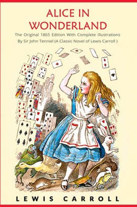

Alicia en el País de las Maravillas

Autor / Author: Lewis Carroll
Género: Infantil
Sinopsis: "Una tarde calurosa junto al río, la joven Alicia persigue a un conejo blanco hasta su profunda madriguera. Tras una larga y lenta caída llega al país de las maravillas, un lugar disparatado e insólito donde las reglas que conoce no funcionan, y en el que comparte juegos y acertijos completamente ilógicos con unas criaturas extravagantes pero inolvidables como la Liebre de Marzo, el Sombrerero, l a Oruga azul, el Gato de Cheshire o la Reina de Corazones."